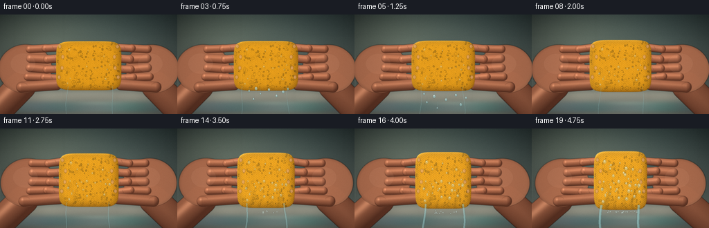
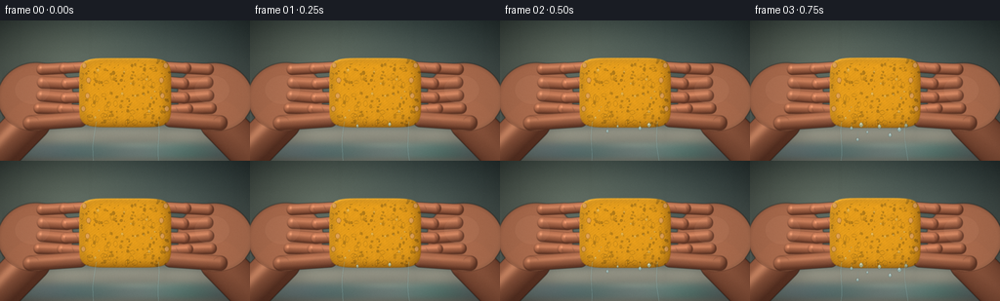
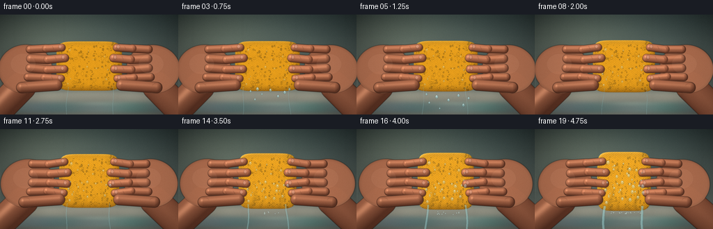

CODING AGENTS AS PIXEL WORLD MODELS
traex/DeepSeek-V4.1-Flash · mechanics_0015
点击播放 · 原生 RGB 像素
逐轮保存的候选
回放视频、检查图与代码变化。
每份候选均可单独播放。实际图片检查记录在下方工具轨迹中。
候选 01播放与检查图
点击播放 · 原生 RGB 像素

展开代码变化
--- 上一保存版本
+++ 本次保存版本
@@ -0,0 +1,570 @@
+from pathlib import Path
+
+import artifact_io
+import numpy as np
+from PIL import Image, ImageDraw, ImageFilter
+
+
+ROOT = Path(__file__).resolve().parent
+WIDTH, HEIGHT = 256, 144
+FRAMES, FPS = 20, 4.0
+SS = 3
+SW, SH = WIDTH * SS, HEIGHT * SS
+
+
+def smoothstep(edge0, edge1, value):
+ t = np.clip((value - edge0) / (edge1 - edge0), 0.0, 1.0)
+ return t * t * (3.0 - 2.0 * t)
+
+
+def make_background():
+ yy, xx = np.mgrid[0:SH, 0:SW].astype(np.float32)
+ x = xx / SW
+ y = yy / SH
+
+ upper = np.array([60, 76, 74], dtype=np.float32) / 255.0
+ middle = np.array([117, 128, 119], dtype=np.float32) / 255.0
+ lower = np.array([190, 188, 169], dtype=np.float32) / 255.0
+
+ t = np.clip(y / 0.74, 0.0, 1.0)[..., None]
+ bg = upper * (1.0 - t) + middle * t
+ rim_y = 0.735 + 0.025 * ((x - 0.5) / 0.5) ** 2
+ basin_t = smoothstep(rim_y - 0.012, rim_y + 0.07, y)[..., None]
+ basin = lower[None, None, :] * (1.0 - 0.32 * np.clip((y - 0.76) / 0.24, 0, 1)[..., None])
+ bg = bg * (1.0 - basin_t) + basin * basin_t
+
+ # Soft window light and a gently out-of-focus tiled wall.
+ glow = np.exp(-(((x - 0.18) / 0.42) ** 2 + ((y - 0.16) / 0.38) ** 2))
+ bg += glow[..., None] * np.array([0.12, 0.11, 0.075], dtype=np.float32)
+ for gy in (0.20, 0.42, 0.64):
+ line = np.exp(-((y - gy) / 0.0028) ** 2)
+ bg *= (1.0 - 0.055 * line[..., None])
+ for gx in (0.08, 0.36, 0.66, 0.94):
+ line = np.exp(-((x - gx) / 0.0025) ** 2)
+ bg *= (1.0 - 0.035 * line[..., None])
+
+ # Ceramic rim, shallow water, and tiny reflected highlights.
+ rim = np.exp(-((y - rim_y) / 0.0055) ** 2)
+ bg = bg * (1.0 - 0.28 * rim[..., None]) + np.array([0.84, 0.86, 0.78]) * (0.28 * rim[..., None])
+ water = smoothstep(0.84, 0.91, y) * (1.0 - smoothstep(0.965, 1.0, y))
+ water_color = np.stack(
+ [0.37 + 0.08 * np.sin(x * 14.0), 0.54 + 0.06 * np.sin(x * 11.0 + 1.0), 0.55 + 0.05 * np.sin(x * 13.0)],
+ axis=-1,
+ )
+ bg = bg * (1.0 - 0.54 * water[..., None]) + water_color * (0.54 * water[..., None])
+ glint = np.exp(-(((x - 0.54) / 0.12) ** 2 + ((y - 0.89) / 0.006) ** 2))
+ bg += glint[..., None] * np.array([0.17, 0.20, 0.16])
+
+ # Broad vignette keeps attention on the squeeze.
+ vignette = 1.0 - 0.38 * (((x - 0.5) / 0.62) ** 2 + ((y - 0.52) / 0.78) ** 2)
+ bg *= np.clip(vignette, 0.55, 1.0)[..., None]
+ image = Image.fromarray((np.clip(bg, 0, 1) * 255).astype(np.uint8))
+ image = image.filter(ImageFilter.GaussianBlur(2.0 * SS))
+ return np.asarray(image, dtype=np.float32) / 255.0
+
+
+def make_sponge_texture():
+ tw, th = 512, 256
+ rng = np.random.default_rng(22)
+ small = rng.normal(0, 1, (32, 64)).astype(np.float32)
+ small = np.asarray(
+ Image.fromarray(((small - small.min()) / (small.max() - small.min()) * 255).astype(np.uint8)).resize(
+ (tw, th), Image.Resampling.BICUBIC
+ ),
+ dtype=np.float32,
+ )
+ fine = rng.normal(0, 1, (th, tw)).astype(np.float32)
+ fine = np.asarray(
+ Image.fromarray(((fine - fine.min()) / (fine.max() - fine.min()) * 255).astype(np.uint8)).filter(
+ ImageFilter.GaussianBlur(0.7)
+ ),
+ dtype=np.float32,
+ )
+ value = 143.0 + 0.15 * (small - 128.0) + 0.06 * (fine - 128.0)
+ texture = Image.fromarray(np.clip(value, 70, 220).astype(np.uint8), "L").convert("RGBA")
+ draw = ImageDraw.Draw(texture, "RGBA")
+
+ # Irregular open cells and their pale lower rims.
+ for _ in range(165):
+ x = int(rng.integers(8, tw - 8))
+ y = int(rng.integers(8, th - 8))
+ rx = int(rng.integers(3, 10))
+ ry = max(2, int(rx * rng.uniform(0.55, 1.0)))
+ angle = float(rng.uniform(0, 180))
+ shade = int(rng.integers(28, 74))
+ draw.ellipse((x - rx, y - ry, x + rx, y + ry), fill=(shade, shade, shade, 220))
+ draw.arc(
+ (x - rx, y - ry, x + rx, y + ry),
+ start=angle,
+ end=angle + 150,
+ fill=(205, 205, 205, 80),
+ width=1,
+ )
+ for _ in range(34):
+ x = int(rng.integers(14, tw - 14))
+ y = int(rng.integers(14, th - 14))
+ rx = int(rng.integers(8, 18))
+ ry = int(rng.integers(5, 13))
+ draw.ellipse((x - rx, y - ry, x + rx, y + ry), outline=(55, 55, 55, 120), width=2)
+
+ texture = texture.filter(ImageFilter.GaussianBlur(0.55))
+ return np.asarray(texture.convert("L"), dtype=np.float32) / 255.0
+
+
+def capsule_mask(xx, yy, p1, p2, radius):
+ ax, ay = p1
+ bx, by = p2
+ vx, vy = bx - ax, by - ay
+ denom = vx * vx + vy * vy + 1e-6
+ t = np.clip(((xx - ax) * vx + (yy - ay) * vy) / denom, 0.0, 1.0)
+ cx = ax + t * vx
+ cy = ay + t * vy
+ dx = xx - cx
+ dy = yy - cy
+ dist = np.sqrt(dx * dx + dy * dy)
+ return dist, dx, dy
+
+
+def paint_capsule(layer, alpha, p1, p2, radius, base, seed_phase=0.0):
+ pad = radius + 4.0
+ x0 = max(0, int((min(p1[0], p2[0]) - pad) * SS))
+ x1 = min(SW, int((max(p1[0], p2[0]) + pad) * SS) + 1)
+ y0 = max(0, int((min(p1[1], p2[1]) - pad) * SS))
+ y1 = min(SH, int((max(p1[1], p2[1]) + pad) * SS) + 1)
+ if x1 <= x0 or y1 <= y0:
+ return
+ yy, xx = np.mgrid[y0:y1, x0:x1].astype(np.float32)
+ x = xx / SS
+ y = yy / SS
+ dist, dx, dy = capsule_mask(x, y, p1, p2, radius)
+ edge_alpha = smoothstep(radius + 0.85, radius - 0.65, dist)
+ inside = dist < radius + 1.0
+ if not np.any(inside):
+ return
+
+ dnorm = np.clip(dist / max(radius, 0.1), 0, 1)
+ radial = np.sqrt(np.maximum(0.0, 1.0 - dnorm * dnorm))
+ safe = np.maximum(dist, 1e-4)
+ nx = dx / safe * dnorm
+ ny = dy / safe * dnorm
+ nz = np.maximum(0.08, radial)
+ norm = np.sqrt(nx * nx + ny * ny + nz * nz)
+ nx, ny, nz = nx / norm, ny / norm, nz / norm
+
+ light = np.array([-0.48, -0.58, 0.66], dtype=np.float32)
+ light /= np.linalg.norm(light)
+ diff = np.clip(nx * light[0] + ny * light[1] + nz * light[2], 0, 1)
+ half = light + np.array([0.0, 0.0, 1.0], dtype=np.float32)
+ half /= np.linalg.norm(half)
+ spec = np.clip(nx * half[0] + ny * half[1] + nz * half[2], 0, 1) ** 28
+ rim = smoothstep(radius - 1.7, radius, dist)
+
+ grain = 0.018 * np.sin(x * 4.7 + seed_phase) * np.sin(y * 5.3 - seed_phase)
+ shade = 0.48 + 0.63 * diff - 0.12 * rim + grain
+ rgb = np.array(base, dtype=np.float32)[None, None, :] * shade[..., None]
+ rgb += spec[..., None] * np.array([0.24, 0.19, 0.15], dtype=np.float32)
+ rgb += np.array([0.075, 0.018, 0.005], dtype=np.float32) * (1.0 - diff[..., None])
+
+ a = edge_alpha * 0.985
+ sub = layer[y0:y1, x0:x1]
+ aa = alpha[y0:y1, x0:x1]
+ sub[:] = rgb * a[..., None] + sub * (1.0 - a[..., None])
+ aa[:] = a + aa * (1.0 - a)
+
+
+def paint_ellipse(layer, alpha, center, radii, angle, base, phase=0.0):
+ cx, cy = center
+ rx, ry = radii
+ pad = max(rx, ry) + 4
+ x0 = max(0, int((cx - pad) * SS))
+ x1 = min(SW, int((cx + pad) * SS) + 1)
+ y0 = max(0, int((cy - pad) * SS))
+ y1 = min(SH, int((cy + pad) * SS) + 1)
+ yy, xx = np.mgrid[y0:y1, x0:x1].astype(np.float32)
+ x = xx / SS - cx
+ y = yy / SS - cy
+ ca, sa = np.cos(angle), np.sin(angle)
+ xr = ca * x + sa * y
+ yr = -sa * x + ca * y
+ q = np.sqrt((xr / rx) ** 2 + (yr / ry) ** 2)
+ edge_alpha = smoothstep(1.03, 0.965, q)
+ z = np.sqrt(np.maximum(0.0, 1.0 - np.minimum(q, 1.0) ** 2))
+ gx = xr / (rx * rx)
+ gy = yr / (ry * ry)
+ nx = ca * gx - sa * gy
+ ny = sa * gx + ca * gy
+ norm = np.sqrt(nx * nx + ny * ny + z * z + 1e-6)
+ nx, ny, nz = nx / norm, ny / norm, z / norm
+ light = np.array([-0.45, -0.62, 0.64], dtype=np.float32)
+ light /= np.linalg.norm(light)
+ diff = np.clip(nx * light[0] + ny * light[1] + nz * light[2], 0, 1)
+ spec = np.clip(nx * 0.2 + ny * 0.22 + nz * 0.95, 0, 1) ** 24
+ grain = 0.015 * np.sin(x * 5.1 + phase) * np.sin(y * 4.4 - phase)
+ shade = 0.47 + 0.66 * diff - 0.08 * smoothstep(0.86, 1.0, q) + grain
+ rgb = np.array(base, dtype=np.float32)[None, None, :] * shade[..., None]
+ rgb += spec[..., None] * np.array([0.22, 0.18, 0.14], dtype=np.float32)
+ a = edge_alpha * 0.985
+ sub = layer[y0:y1, x0:x1]
+ aa = alpha[y0:y1, x0:x1]
+ sub[:] = rgb * a[..., None] + sub * (1.0 - a[..., None])
+ aa[:] = a + aa * (1.0 - a)
+
+
+def hand_geometry(e, side):
+ inward = 7.3 * e
+ if side == "left":
+ palm = (36.0 + inward, 78.0 + 0.4 * np.sin(e * 7.0), 39.0, 35.0, -0.11)
+ wrist_a, wrist_b = (-9.0, 144.0), (31.0 + inward, 103.0)
+ edge = 128.0 - (47.5 - 8.7 * e)
+ fingers = [
+ ((43.0 + inward, 50.0), (edge + 8.0, 47.5 - 1.0 * e), 5.8),
+ ((44.0 + inward, 63.5), (edge + 12.5, 62.5), 6.3),
+ ((43.0 + inward, 77.0), (edge + 11.5, 78.5), 6.1),
+ ((40.0 + inward, 90.0), (edge + 7.0, 92.0), 5.7),
+ ]
+ thumb = ((31.0 + inward, 105.0), (edge + 1.0, 101.5), 7.8)
+ else:
+ palm = (220.0 - inward, 78.0 + 0.4 * np.sin(e * 7.0 + 0.8), 39.0, 35.0, 0.11)
+ wrist_a, wrist_b = (265.0, 144.0), (225.0 - inward, 103.0)
+ edge = 128.0 + (47.5 - 8.7 * e)
+ fingers = [
+ ((213.0 - inward, 50.0), (edge - 8.0, 47.5 - 1.0 * e), 5.8),
+ ((212.0 - inward, 63.5), (edge - 12.5, 62.5), 6.3),
+ ((213.0 - inward, 77.0), (edge - 11.5, 78.5), 6.1),
+ ((216.0 - inward, 90.0), (edge - 7.0, 92.0), 5.7),
+ ]
+ thumb = ((225.0 - inward, 105.0), (edge - 1.0, 101.5), 7.8)
+ return palm, wrist_a, wrist_b, fingers, thumb
+
+
+def render_hand(e, side):
+ layer = np.zeros((SH, SW, 3), dtype=np.float32)
+ alpha = np.zeros((SH, SW), dtype=np.float32)
+ palm, wrist_a, wrist_b, fingers, thumb = hand_geometry(e, side)
+ skin = np.array([0.72, 0.43, 0.30], dtype=np.float32)
+ finger_skin = np.array([0.77, 0.47, 0.33], dtype=np.float32)
+
+ paint_capsule(layer, alpha, wrist_a, wrist_b, 21.0, skin * 0.84, 0.8)
+ paint_ellipse(layer, alpha, palm[:2], palm[2:4], palm[4], skin, 1.3)
+
+ # Fingers are built from two segments so each one visibly bends around the sponge.
+ for index, (start, tip, radius) in enumerate(fingers):
+ sx, sy = start
+ tx, ty = tip
+ bend = 1.8 * np.sin(index * 1.1 + e * 3.0)
+ mid = ((sx + tx) * 0.5, (sy + ty) * 0.5 + bend)
+ paint_capsule(layer, alpha, start, mid, radius, finger_skin * 0.96, index * 0.9)
+ paint_capsule(layer, alpha, mid, tip, radius * 0.94, finger_skin, index * 0.9 + 0.4)
+ paint_capsule(layer, alpha, thumb[0], thumb[1], thumb[2], finger_skin * 0.88, 2.4)
+ return layer, alpha
+
+
+def add_hand_details(image, e):
+ # Fine creases, nails, and wet skin glints are drawn at supersampled resolution.
+ overlay = Image.new("RGBA", (SW, SH), (0, 0, 0, 0))
+ draw = ImageDraw.Draw(overlay, "RGBA")
+ for side in ("left", "right"):
+ palm, _, _, fingers, thumb = hand_geometry(e, side)
+ direction = 1 if side == "left" else -1
+ for index, (start, tip, radius) in enumerate(fingers):
+ sx, sy = start
+ tx, ty = tip
+ for frac in (0.48, 0.73):
+ x = (sx + (tx - sx) * frac) * SS
+ y = (sy + (ty - sy) * frac) * SS
+ draw.line(
+ (x - 1.0 * SS, y - radius * 0.42 * SS, x + 1.0 * SS, y + radius * 0.30 * SS),
+ fill=(91, 47, 37, 105),
+ width=max(1, int(0.55 * SS)),
+ )
+ nail_x = tx - direction * 2.3
+ nail_y = ty - 1.3
+ draw.ellipse(
+ (
+ (nail_x - 2.2) * SS,
+ (nail_y - 2.8) * SS,
+ (nail_x + 2.2) * SS,
+ (nail_y + 2.8) * SS,
+ ),
+ fill=(226, 168, 144, 115),
+ outline=(119, 66, 55, 105),
+ width=max(1, int(0.4 * SS)),
+ )
+ draw.line(
+ (
+ (nail_x - 1.5) * SS,
+ (nail_y - 2.0) * SS,
+ (nail_x - 1.0) * SS,
+ (nail_y + 1.6) * SS,
+ ),
+ fill=(255, 226, 205, 110),
+ width=max(1, int(0.45 * SS)),
+ )
+ # A restrained thumb crease and palm highlight.
+ tx0, ty0 = thumb[0]
+ tx1, ty1 = thumb[1]
+ draw.arc(
+ (
+ (tx0 - 7) * SS,
+ (ty0 - 7) * SS,
+ (tx0 + 9) * SS,
+ (ty0 + 7) * SS,
+ ),
+ 205,
+ 335,
+ fill=(95, 48, 38, 85),
+ width=max(1, int(0.45 * SS)),
+ )
+ px, py = palm[:2]
+ draw.ellipse(
+ ((px - 21) * SS, (py - 22) * SS, (px + 15) * SS, (py + 8) * SS),
+ fill=(245, 176, 140, 22),
+ )
+ draw.line(
+ (
+ (tx1 - direction * 1.2) * SS,
+ (ty1 - 1.3) * SS,
+ (tx1 + direction * 4.2) * SS,
+ (ty1 + 2.0) * SS,
+ ),
+ fill=(255, 216, 190, 75),
+ width=max(1, int(0.45 * SS)),
+ )
+ overlay = overlay.filter(ImageFilter.GaussianBlur(0.35 * SS))
+ rgba = np.asarray(overlay, dtype=np.float32) / 255.0
+ a = rgba[..., 3:4]
+ image[:] = image * (1.0 - a) + rgba[..., :3] * a
+
+
+def make_shadow(image, e):
+ mask = Image.new("L", (SW, SH), 0)
+ draw = ImageDraw.Draw(mask)
+ draw.ellipse((55 * SS, 34 * SS, 201 * SS, 126 * SS), fill=150)
+ left = hand_geometry(e, "left")
+ right = hand_geometry(e, "right")
+ for geom in (left, right):
+ palm = geom[0]
+ draw.ellipse(
+ (
+ (palm[0] - palm[2]) * SS,
+ (palm[1] - palm[3]) * SS,
+ (palm[0] + palm[2]) * SS,
+ (palm[1] + palm[3]) * SS,
+ ),
+ fill=165,
+ )
+ mask = mask.filter(ImageFilter.GaussianBlur(8.0 * SS))
+ shifted = Image.new("L", (SW, SH), 0)
+ shifted.paste(mask, (int(2.2 * SS), int(4.0 * SS)))
+ shadow = np.asarray(shifted, dtype=np.float32)[..., None] / 255.0
+ image *= (1.0 - 0.22 * shadow)
+
+
+def sponge_parameters(e):
+ return {
+ "cx": 128.0,
+ "cy": 74.0 + 1.2 * e,
+ "a": 47.5 - 8.7 * e,
+ "b": 35.8 + 7.0 * e,
+ }
+
+
+def render_sponge(e, texture):
+ yy, xx = np.mgrid[0:SH, 0:SW].astype(np.float32)
+ x = xx / SS
+ y = yy / SS
+ p = sponge_parameters(e)
+ xf = (x - p["cx"]) / p["a"]
+ yf = (y - p["cy"]) / p["b"]
+
+ # Rounded rectangular volume with extra lower-front bulge under pressure.
+ q = (np.abs(xf) ** 6 + np.abs(yf) ** 6) ** (1.0 / 6.0)
+ lower_bulge = 0.25 * e * np.exp(-(((xf + 0.08) / 0.54) ** 2 + ((yf - 0.58) / 0.32) ** 2))
+ z = 1.15 * np.sqrt(np.maximum(0.0, 1.0 - np.minimum(q, 1.0) ** 5.0)) + lower_bulge
+ zy, zx = np.gradient(z)
+ strength = 4.6
+ nx = -zx * strength
+ ny = -zy * strength
+ nz = np.ones_like(nx)
+ norm = np.sqrt(nx * nx + ny * ny + nz * nz)
+ nx, ny, nz = nx / norm, ny / norm, nz / norm
+
+ u = np.clip((xf + 1.0) * 0.5, 0.0, 1.0)
+ v = np.clip((yf + 1.0) * 0.5, 0.0, 1.0)
+ ti_x = np.clip((u * (texture.shape[1] - 1)).astype(np.int32), 0, texture.shape[1] - 1)
+ ti_y = np.clip((v * (texture.shape[0] - 1)).astype(np.int32), 0, texture.shape[0] - 1)
+ tex = texture[ti_y, ti_x]
+
+ light = np.array([-0.52, -0.66, 0.58], dtype=np.float32)
+ light /= np.linalg.norm(light)
+ diffuse = np.clip(nx * light[0] + ny * light[1] + nz * light[2], 0, 1)
+ half = light + np.array([0.0, 0.0, 1.0], dtype=np.float32)
+ half /= np.linalg.norm(half)
+ ndoth = np.clip(nx * half[0] + ny * half[1] + nz * half[2], 0, 1)
+
+ base = np.array([0.96, 0.67, 0.075], dtype=np.float32)
+ shade = (0.31 + 0.83 * diffuse) * (0.70 + 0.42 * tex)
+ shade *= 1.0 - 0.20 * smoothstep(0.72, 1.0, q)
+ rgb = base[None, None, :] * shade[..., None]
+ rgb += np.array([0.17, 0.095, 0.006], dtype=np.float32) * tex[..., None]
+ spec = (ndoth ** 30) * (0.30 + 0.22 * e)
+ broad = (ndoth ** 7) * (0.055 + 0.035 * e)
+ rgb += (spec + broad)[..., None] * np.array([1.0, 0.95, 0.76], dtype=np.float32)
+ rgb += (1.0 - diffuse)[..., None] * np.array([0.13, 0.045, 0.006], dtype=np.float32)
+
+ # Compression folds, strongest near the lower half and close to the palms.
+ wobble = 0.075 * np.sin(yf * 9.0 + e * 4.0)
+ folds = np.zeros_like(x)
+ for fx, width, depth in ((-0.49, 0.075, 0.17), (0.48, 0.070, 0.15), (-0.16, 0.050, 0.08), (0.22, 0.045, 0.06)):
+ folds += depth * np.exp(-((xf - fx - wobble) / width) ** 2) * smoothstep(-0.25, 0.85, yf)
+ rgb *= (1.0 - e * folds)[..., None]
+ rgb += (e * folds * 0.13)[..., None] * np.array([1.0, 0.83, 0.38], dtype=np.float32)
+
+ edge_alpha = smoothstep(1.008, 0.975, q)
+ wet_beads = (0.07 + 0.13 * e) * (0.5 + 0.5 * np.sin(x * 1.7 + y * 2.2 + e * 5.0))
+ rgb += np.clip(wet_beads, 0, 1)[..., None] * np.array([0.24, 0.30, 0.28], dtype=np.float32) * (0.4 + 0.6 * ndoth[..., None])
+ return rgb, edge_alpha
+
+
+def composite_sponge(image, e, texture):
+ rgb, alpha = render_sponge(e, texture)
+ image[:] = rgb * alpha[..., None] + image * (1.0 - alpha[..., None])
+ return alpha
+
+
+def draw_water(image, e, frame_index):
+ overlay = Image.new("RGBA", (SW, SH), (0, 0, 0, 0))
+ draw = ImageDraw.Draw(overlay, "RGBA")
+ p = sponge_parameters(e)
+ t = frame_index / FPS
+ rng = np.random.default_rng(511)
+
+ # Beads sitting on the front face of the sponge.
+ bead_count = 12 + int(28 * e)
+ for _ in range(bead_count):
+ xf = rng.uniform(-0.72, 0.72)
+ yf = rng.uniform(-0.64, 0.73)
+ x = p["cx"] + xf * p["a"]
+ y = p["cy"] + yf * p["b"]
+ radius = rng.uniform(0.65, 2.0) * (0.75 + 0.5 * e)
+ draw.ellipse(
+ ((x - radius) * SS, (y - radius * 1.15) * SS, (x + radius) * SS, (y + radius * 1.15) * SS),
+ fill=(178, 220, 218, int(42 + 40 * e)),
+ )
+ draw.ellipse(
+ ((x - radius * 0.35) * SS, (y - radius * 0.72) * SS, (x + radius * 0.25) * SS, (y - radius * 0.12) * SS),
+ fill=(245, 255, 249, int(125 + 60 * e)),
+ )
+
+ # Increasing runoff from the lower corners.
+ stream_strength = smoothstep(0.28, 1.0, e)
+ for side in (-1, 1):
+ start_x = p["cx"] + side * p["a"] * (0.67 + 0.04 * np.sin(frame_index * 0.8 + side))
+ start_y = p["cy"] + p["b"] * 0.83
+ points = []
+ for k in range(8):
+ yy = start_y + k * 8.5
+ xx = start_x + side * (0.45 * k + 1.2 * np.sin(t * 2.8 + k * 0.9 + side))
+ points.append((xx * SS, yy * SS))
+ width = max(1, int((1.1 + 2.6 * stream_strength) * SS))
+ draw.line(points, fill=(151, 207, 207, int(55 + 88 * stream_strength)), width=width, joint="curve")
+ hi_points = [(x - 0.6 * SS, y) for x, y in points]
+ draw.line(
+ hi_points,
+ fill=(225, 251, 247, int(65 + 95 * stream_strength)),
+ width=max(1, int(0.55 * SS)),
+ joint="curve",
+ )
+
+ # Deterministic droplets accelerate downward as pressure rises.
+ drop_specs = [
+ (0.12, -0.38, 0.0, 1.2),
+ (0.25, 0.32, 0.1, 1.5),
+ (0.35, -0.15, -0.2, 1.0),
+ (0.45, 0.52, 0.2, 1.8),
+ (0.52, -0.52, 0.1, 1.3),
+ (0.61, 0.10, -0.1, 1.7),
+ (0.68, 0.68, 0.3, 1.4),
+ (0.74, -0.30, 0.2, 2.0),
+ (0.80, 0.42, -0.2, 1.6),
+ (0.86, -0.62, 0.3, 1.4),
+ ]
+ for ts, xf, vx, size in drop_specs:
+ if t < ts:
+ continue
+ dt = t - ts
+ x = p["cx"] + xf * p["a"] + vx * dt * 9.0
+ y = p["cy"] + p["b"] * 0.91 + 9.0 * dt + 24.0 * dt * dt
+ if y > 139:
+ continue
+ trail = min(10.0, 3.0 + 9.0 * dt)
+ draw.line(
+ (x * SS, (y - trail) * SS, x * SS, y * SS),
+ fill=(174, 222, 220, 62),
+ width=max(1, int(0.75 * SS)),
+ )
+ draw.ellipse(
+ ((x - size) * SS, (y - size * 1.2) * SS, (x + size) * SS, (y + size * 1.2) * SS),
+ fill=(157, 208, 209, 145),
+ )
+ draw.ellipse(
+ ((x - size * 0.38) * SS, (y - size * 0.85) * SS, (x + size * 0.18) * SS, (y - size * 0.18) * SS),
+ fill=(248, 255, 252, 225),
+ )
+
+ # A few tiny splashes where the runoff meets the basin.
+ if e > 0.52:
+ splash_count = int(5 + 13 * smoothstep(0.5, 1.0, e))
+ for k in range(splash_count):
+ angle = rng.uniform(0, np.pi * 2)
+ radius = rng.uniform(2.0, 12.0)
+ x = p["cx"] + np.cos(angle) * radius * 2.0
+ y = 121.0 + np.sin(angle) * radius * 0.22
+ draw.ellipse(
+ ((x - 0.7) * SS, (y - 0.9) * SS, (x + 0.7) * SS, (y + 0.9) * SS),
+ fill=(220, 245, 238, 115),
+ )
+
+ overlay = overlay.filter(ImageFilter.GaussianBlur(0.25 * SS))
+ rgba = np.asarray(overlay, dtype=np.float32) / 255.0
+ a = rgba[..., 3:4]
+ image[:] = image * (1.0 - a) + rgba[..., :3] * a
+
+
+def render_frame(frame_index, background, texture):
+ t = frame_index / (FRAMES - 1)
+ e = float(t ** 1.43)
+ image = background.copy()
+ make_shadow(image, e)
+
+ for side in ("left", "right"):
+ layer, alpha = render_hand(e, side)
+ image[:] = layer * alpha[..., None] + image * (1.0 - alpha[..., None])
+
+ composite_sponge(image, e, texture)
+ add_hand_details(image, e)
+ draw_water(image, e, frame_index)
+
+ # Fine photographic grain and a gentle cool lift in the shadows.
+ yy, xx = np.mgrid[0:SH, 0:SW].astype(np.float32)
+ grain_rng = np.random.default_rng(1000 + frame_index)
+ grain = grain_rng.normal(0, 0.0075, (SH, SW, 1)).astype(np.float32)
+ image = np.clip(image + grain + np.array([0.002, 0.006, 0.008], dtype=np.float32), 0, 1)
+ vignette = 1.0 - 0.18 * (((xx / SW - 0.5) / 0.62) ** 2 + ((yy / SH - 0.5) / 0.72) ** 2)
+ image *= np.clip(vignette, 0.70, 1.0)[..., None]
+
+ frame = Image.fromarray((image * 255.0 + 0.5).astype(np.uint8)).resize(
+ (WIDTH, HEIGHT), Image.Resampling.LANCZOS
+ )
+ return np.asarray(frame, dtype=np.uint8)
+
+
+def main():
+ background = make_background()
+ texture = make_sponge_texture()
+ frames = [render_frame(index, background, texture) for index in range(FRAMES)]
+ artifact_io.save(frames, ROOT)
+
+
+if __name__ == "__main__":
+ main()
候选 02播放与检查图
点击播放 · 原生 RGB 像素

展开代码变化
--- 上一保存版本
+++ 本次保存版本
@@ -248,6 +248,22 @@
paint_ellipse(layer, alpha, palm[:2], palm[2:4], palm[4], skin, 1.3)
# Fingers are built from two segments so each one visibly bends around the sponge.
+ for index, (start, tip, radius) in enumerate(fingers):
+ sx, sy = start
+ tx, ty = tip
+ bend = 1.8 * np.sin(index * 1.1 + e * 3.0)
+ mid = ((sx + tx) * 0.5, (sy + ty) * 0.5 + bend)
+ paint_capsule(layer, alpha, start, mid, radius, finger_skin * 0.96, index * 0.9)
+ paint_capsule(layer, alpha, mid, tip, radius * 0.94, finger_skin, index * 0.9 + 0.4)
+ paint_capsule(layer, alpha, thumb[0], thumb[1], thumb[2], finger_skin * 0.88, 2.4)
+ return layer, alpha
+
+
+def render_foreground_fingers(e, side):
+ layer = np.zeros((SH, SW, 3), dtype=np.float32)
+ alpha = np.zeros((SH, SW), dtype=np.float32)
+ _, _, _, fingers, thumb = hand_geometry(e, side)
+ finger_skin = np.array([0.77, 0.47, 0.33], dtype=np.float32)
for index, (start, tip, radius) in enumerate(fingers):
sx, sy = start
tx, ty = tip
@@ -542,6 +558,9 @@
image[:] = layer * alpha[..., None] + image * (1.0 - alpha[..., None])
composite_sponge(image, e, texture)
+ for side in ("left", "right"):
+ layer, alpha = render_foreground_fingers(e, side)
+ image[:] = layer * alpha[..., None] + image * (1.0 - alpha[..., None])
add_hand_details(image, e)
draw_water(image, e, frame_index)
候选 03播放与检查图

候选 04播放与检查图
点击播放 · 原生 RGB 像素

展开代码变化
--- 上一保存版本
+++ 本次保存版本
@@ -81,7 +81,7 @@
dtype=np.float32,
)
value = 143.0 + 0.15 * (small - 128.0) + 0.06 * (fine - 128.0)
- texture = Image.fromarray(np.clip(value, 70, 220).astype(np.uint8), "L").convert("RGBA")
+ texture = Image.fromarray(np.clip(value, 70, 220).astype(np.uint8)).convert("RGBA")
draw = ImageDraw.Draw(texture, "RGBA")
# Irregular open cells and their pale lower rims.
可观测工具轨迹
实际执行的命令与返回图片。
命令 1exit 0
/bin/bash -c "pwd && rg --files -g 'prompt.txt' -g 'GENERATION_RULES.md' -g 'task_spec.json' -g '"'!node_modules'"' -g '"'!venv'"'"
命令 2exit 0
/bin/bash -c 'ls -la'
命令 3exit 0
/bin/bash -c 'git status --short --branch 2>/dev/null || true'
命令 4exit 0
/bin/bash -c 'cat prompt.txt'
命令 5exit 0
/bin/bash -c 'cat GENERATION_RULES.md'
命令 6exit 0
/bin/bash -c 'cat task_spec.json'
命令 7exit 0
/bin/bash -c "sed -n '1,240p' artifact_io.py"
命令 8exit 0
/bin/bash -c "python - <<'PY'
import numpy, PIL
print('numpy', numpy.__version__)
print('PIL', PIL.__version__)
PY"命令 9exit 0
/bin/bash -c "sed -n '1,240p' player_template.html"
命令 10exit 0
/bin/bash -c 'python generate.py'
命令 11exit 0
/bin/bash -c 'ls -lh pixels.npz inspection.png transition_check.png frames/00.png frames/19.png'
命令 12exit 0
/bin/bash -c 'command -v chafa || command -v viu || command -v jp2 || command -v img2txt || true'
命令 13exit 0
/bin/bash -c "python - <<'PY'
from PIL import Image
import numpy as np
for i in (0,5,10,15,19):
a=np.asarray(Image.open(f'frames/{i:02d}.png'))
print(i, 'mean', a.mean((0,1)).round(1), 'std', a.std().round(1), 'yellow%', ((a[:,:,0]>150)&(a[:,:,1]>95)&(a[:,:,2]<90)).mean().round(3), 'skin%', ((a[:,:,0]>90)&(a[:,:,0]>a[:,:,1]*1.25)&(a[:,:,1]>a[:,:,2]*1.1)).mean().round(3))
PY"命令 14exit 0
/bin/bash -c "python - <<'PY'
from PIL import Image
import numpy as np
for f in (0,19):
a=np.asarray(Image.open(f'frames/{f:02d}.png')).astype(float)
# average blocks 4x4
a=a.reshape(36,4,64,4,3).mean((1,3))
r,g,b=a.transpose(2,0,1)
lines=[]
for yy in range(36):
s=''
for xx in range(64):
R,G,B=r[yy,xx],g[yy,xx],b[yy,xx]
if R>125 and G>85 and B<90 and R>G*1.15: c='S' # sponge
elif R>75 and R>G*1.15 and G>B*1.15: c='h' # hand
elif R+G+B<130: c='#'
elif B>R*0.9 and G>R*0.9: c='~'
elif R+G+B>500: c='.'
else: c=' '
s+=c
lines.append(s)
print('\\nFRAME',f)
print('\\n'.join(lines))
PY"命令 15exit 0
/bin/bash -c "python - <<'PY'
from PIL import Image
import numpy as np
ims=[np.asarray(Image.open(f'frames/{i:02d}.png')).astype(np.int16) for i in range(20)]
print('consecutive mean abs diff:')
print([round(float(np.abs(ims[i]-ims[i-1]).mean()),2) for i in range(1,20)])
print('frame0 vs 19 mean abs diff', round(float(np.abs(ims[-1]-ims[0]).mean()),2))
# saturated sponge extent by a simple hue test, report bounding box and occupancy
for i in (0,5,10,15,19):
a=ims[i]
m=(a[:,:,0]>130)&(a[:,:,0]>a[:,:,1]*1.25)&(a[:,:,1]>a[:,:,2]*1.6)
y,x=np.where(m)
print(i,'sponge bbox', (x.min(),y.min(),x.max(),y.max()), 'pixels', int(m.sum()))
PY"命令 16exit 0
/bin/bash -c "python - <<'PY'
from PIL import Image
im=Image.open('inspection.png')
im.resize((768, 320), Image.Resampling.LANCZOS).save('.tmp/inspection_large.png')
# Color/brightness summaries per 8x8 tile for frame 19, in numeric form.
import numpy as np
a=np.asarray(Image.open('frames/19.png')).reshape(18,8,32,8,3).mean((1,3)).astype(int)
for y in range(18):
print(' '.join(f'{r:03d},{g:03d},{b:03d}' for r,g,b in a[y]))
PY"命令 17exit 0
/bin/bash -c 'command -v ffmpeg || true'
命令 18exit 0
/bin/bash -c "python - <<'PY'
from PIL import Image
im=Image.open('inspection.png')
print(im.size)
print('palette-ish quantized top colors frame 19')
q=Image.open('frames/19.png').quantize(colors=12)
p=q.getpalette(); counts=sorted(q.getcolors(), reverse=True)
for n,i in counts[:12]: print(n, tuple(p[i*3:i*3+3]))
PY"命令 19exit 0
/bin/bash -c 'python generate.py'
命令 20exit 0
/bin/bash -c "python - <<'PY'
from PIL import Image
import numpy as np
for i in (0,19):
a=np.asarray(Image.open(f'frames/{i:02d}.png')).astype(float)
a=a.reshape(36,4,64,4,3).mean((1,3))
r,g,b=a.transpose(2,0,1)
lines=[]
for yy in range(36):
s=''
for xx in range(64):
R,G,B=r[yy,xx],g[yy,xx],b[yy,xx]
if R>125 and G>85 and B<90 and R>G*1.15: c='S'
elif R>75 and R>G*1.15 and G>B*1.15: c='h'
elif R+G+B<130: c='#'
elif B>R*0.9 and G>R*0.9: c='~'
elif R+G+B>500: c='.'
else: c=' '
s+=c
lines.append(s)
print('\\nFRAME',i)
print('\\n'.join(lines))
PY"命令 21exit 0
/bin/bash -c "python - <<'PY'
from PIL import Image
im=Image.open('inspection.png')
# make a filmstrip at larger size
src=im.crop((0,0,1024,330))
src.resize((1536,495), Image.Resampling.NEAREST).save('.tmp/inspection_zoom.png')
# 4x5 contact sheet at 2x
out=Image.new('RGB',(256*5,144*4),(20,20,20))
for i in range(20):
f=Image.open(f'frames/{i:02d}.png')
out.paste(f,((i%5)*256,(i//5)*144))
out.save('.tmp/contact.png')
PY"命令 22exit 0
/bin/bash -c "python - <<'PY' from PIL import Image import numpy as np # quantify intended contact: edge of sponge (x) and fingertip locations for i in (0,5,10,15,19): t=i/19; e=t**1.43 print(i, 'e',round(e,3),'a',round(47.5-8.7*e,1),'b',round(35.8+7*e,1),'edge',round(128-(47.5-8.7*e),1),'finger',round(128-(47.5-8.7*e)+8,1)) PY"
命令 23exit 0
/bin/bash -c "sha256sum pixels.npz frames/00.png frames/19.png > .tmp/hash_before.txt && python generate.py && sha256sum pixels.npz frames/00.png frames/19.png > .tmp/hash_after.txt && diff -u .tmp/hash_before.txt .tmp/hash_after.txt && python - <<'PY'
import json, numpy as np
from PIL import Image
from pathlib import Path
spec=json.loads(Path('task_spec.json').read_text())
z=np.load('pixels.npz')['pixels']
frames=[np.asarray(Image.open(f'frames/{i:02d}.png')) for i in range(spec['frames'])]
a=np.stack(frames)
print('spec', spec)
print('npz', z.shape, z.dtype, 'frames', a.shape, a.dtype)
print('range', int(a.min()), int(a.max()), 'bytes', Path('pixels.npz').stat().st_size)
print('index.html', Path('index.html').stat().st_size, 'inspection', Image.open('inspection.png').size)
print('deterministic: yes')
PY"命令 24exit 0
/bin/bash -c 'python -m py_compile generate.py && rg -n "artifact_io.save|def main|FRAMES|WIDTH|HEIGHT" generate.py'
保存候选 4 份；完成命令 24 次；可验证图片返回 0 张。原始 API 响应与完整日志保留在本地。